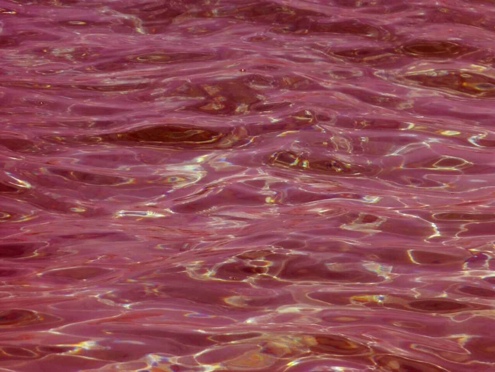

<html>
   <head>
     <title>The End</title>
     <!-- include aframe -->
     <script src="https://aframe.io/releases/0.8.0/aframe.min.js"></script>
     <!-- include aframe-ar.js -->
     <script src="https://cdn.rawgit.com/jeromeetienne/AR.js/1.6.0/aframe/build/aframe-ar.js"></script>
     <!-- include aframe extra -->

       <script src="aframe-extras.js"></script>
   </head>
   <body>
   	<!-- enable artoolkit on this scene -->
   
       
       
       
     <a-scene embedded arjs="sourceType: webcam; debugUIEnabled: false;">


         
<!--         <a-marker-camera preset='hiro'></a-marker-camera>-->
       
<!--
<a-assets>
    
  </a-assets>
-->
       <a-entity camera></a-entity>
           <a-sphere material=" emissive: #fff; emissiveIntensity: 100;"position="5 10 -50" radius="0.5" color="#ffff00"></a-sphere>
<!--     </a-scene>-->
<!--           <a-entity light="color: #AFA; intensity: 1.5" position="-1 1 0"></a-entity>-->

       <a-ocean  material="src: 2.jpg; opacity:0.9; color: #f08080;"  position="0 -5 0" width="300" depth="300" density="200" speed="0.2"></a-ocean>
         
  </a-scene>
   
    
    </body>
 </html>